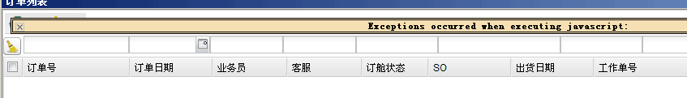
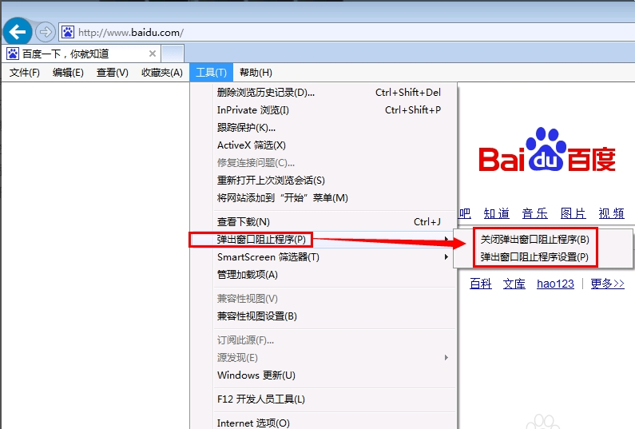
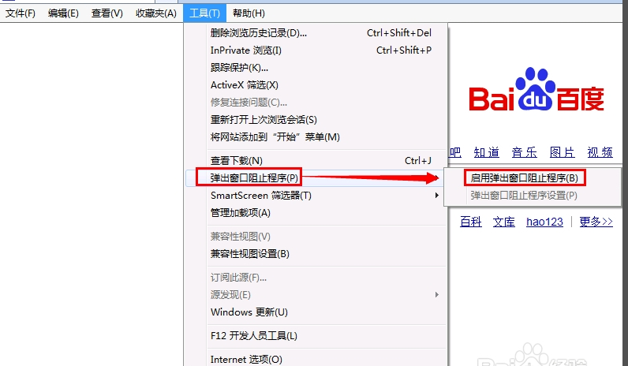
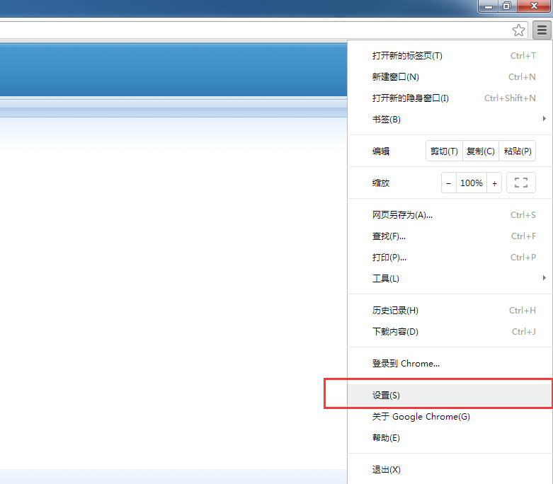
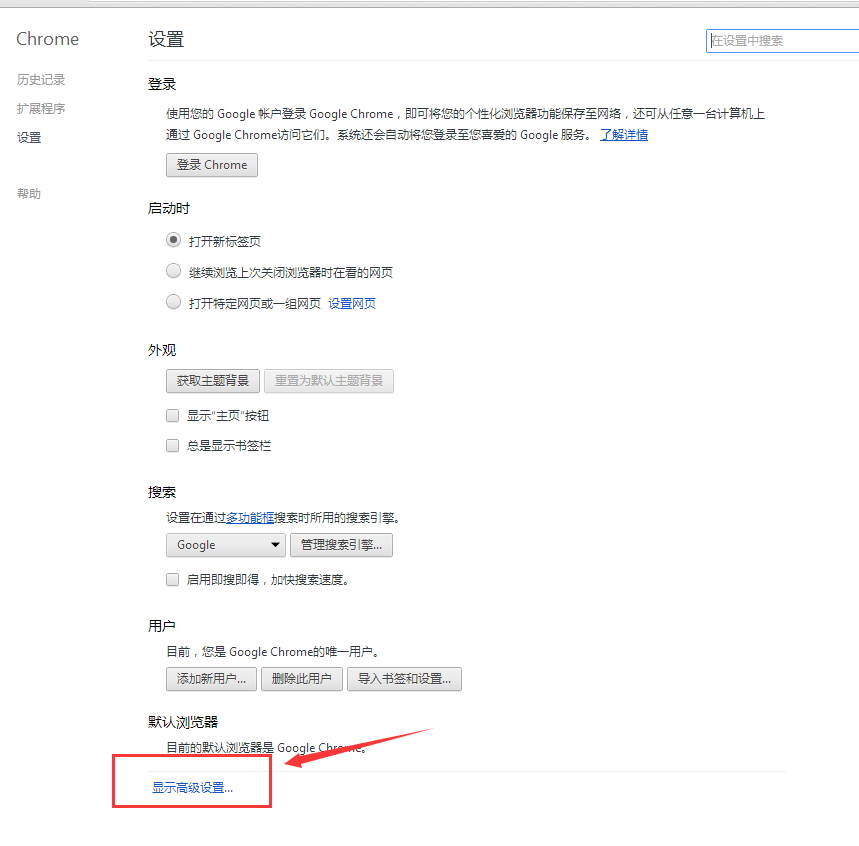
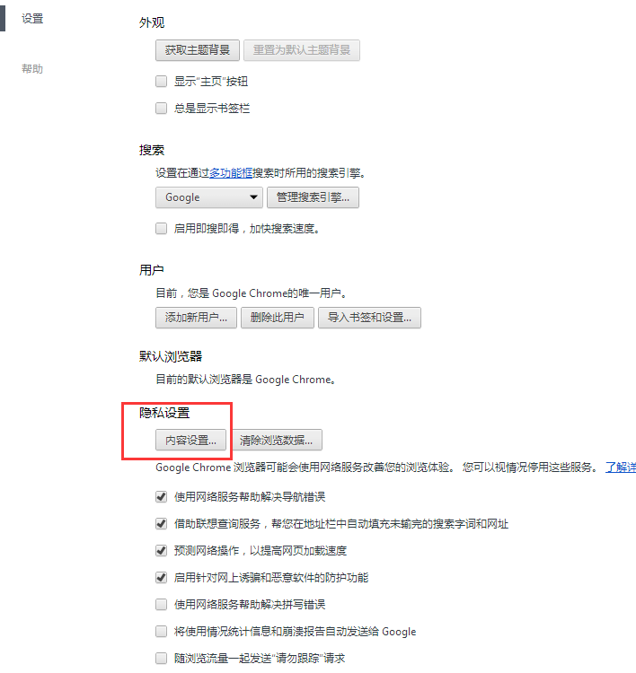
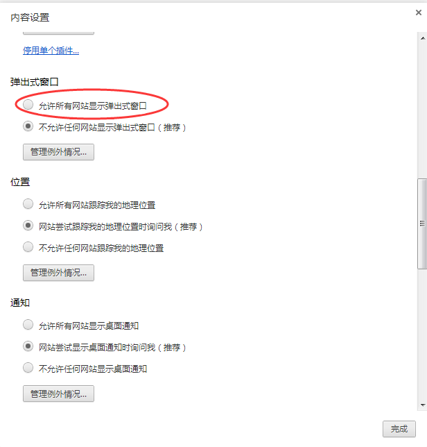

浏览器弹窗设置可以开放或禁用一些程序代码功能，如果您发现有些功能不能正常使用或者弹出如下图所示错误提示，请设置您的弹出窗口设置，下面来简单说说主流浏览器弹出窗口设置。

1.IE浏览器：本例子是在win7、IE10浏览器环境下设置的，其他的环境大家举一反三。打开ie-》工具选项-》弹出窗口阻止程序-》会有关闭弹出窗口阻止程序和弹出窗口阻止程序设置 ，出现如下二个窗口则说明这个功能是打开的，也就是说启用了这个功能。

如果关闭了这个功能则会出现下面图示：那么你再点击“启用弹出窗口阻止程序”，这个功能就打开了。

2.谷歌Google浏览器：在工具栏上使用 Google Chrome 菜单。工具栏上的菜单位于浏览器右上角。选择“设置”。

在页面底端找到并点击“显示高级设置”。

在“隐私设置”部分，点击“内容设置”。

在“弹出式窗口”部分，选择“允许所有网站显示弹出式窗口”即可完成设置

下面是其他浏览器弹出窗口设置地址：
如果您使用英文版的浏览器：此链接种展示了主流浏览器的弹出窗口设置方法